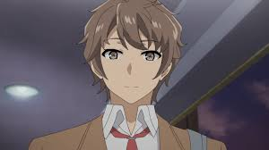
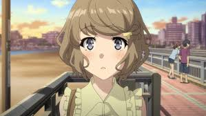

Characters
Mai Sakurajima
Role:Main heroine
Voice Actor: Asami Seto
About:
- A famous actress who suddenly stops being recognized by people due to Adolescence Syndrome.
- Despite her calm and confident personality, she hides deep insecurities about being forgotten.
- Intelligent, mature, and strong-willed — yet she shows a softer, caring side only to Sakuta.
- Her bunny girl outfit became iconic because it symbolizes her invisibility — something bold, yet unseen.
- Though she appears distant at first, Mai slowly opens up and shows her genuine emotions, especially her love for Sakuta.
- Her birthday is December 2.
- She loves strawberry milk and teasing Sakuta with witty remarks.
Sakuta Azusagawa
Role:Main protagonist
Voice Actor:Kaito Ishikawa
About:
- A high school student known for his blunt honesty and sarcastic humor.
- He has visible scars on his chest from his own experience with Adolescence Syndrome.
- Deeply caring and empathetic — always willing to help others with their emotional struggles, even when it hurts him.
- His relationship with Mai is one of trust, respect, and genuine affection.
- Though he seems chill, he’s incredibly observant and emotionally intelligent.
- He’s surprisingly bad at lying but great at trolling people.
- His catchphrase-like humor makes even the most serious moments funny.
Tomoe Koga
Role:Supporting character / First-year student
Voice Actor:Nao Toyama
About:
- A cheerful and somewhat insecure girl who suffers from time loop-type Adolescence Syndrome.
- Fears rejection and rumors, which leads her to fake a relationship with Sakuta.
- Over time, she matures emotionally and learns to face her insecurities.
- Though she develops feelings for Sakuta, she accepts the situation gracefully and remains a loyal friend.
- She uses cute slang and is often embarrassed about being emotional.
- Her arc focuses on self-worth and being true to yourself.
Rio Futaba
Role: Sakuta’s friend and the school’s science genius
Voice Actor: Atsumi Tanezaki
About:
- A calm, rational, and incredibly smart girl who helps analyze the science behind Adolescence Syndrome.
- Despite her intelligence, she struggles with self-image issues and loneliness.
- Her double-existence arc shows how self-hatred can literally split you in two.
- She’s the “voice of reason” but also has a sarcastic, mature humor that balances the group dynamic.
- Loves physics and spends most of her free time in the science lab.
- Secretly enjoys teasing Sakuta and Kaede.
Kaede Azusagawa

Role: Sakuta’s younger sister
Voice Actor: Yurika Kubo
About:
- Suffers from severe social anxiety after being bullied online — a side effect of Adolescence Syndrome.
- She develops memory loss and becomes a completely different personality: shy, cute, and dependent on Sakuta.
- Her arc is both heartwarming and heartbreaking, showing the pain of trauma and recovery.
- Loves pandas, milk tea, and spending time with her brother.
- She writes goals in a notebook titled “Kaede’s To-Do List.”
- Her voice and behavior change drastically after regaining her memory.